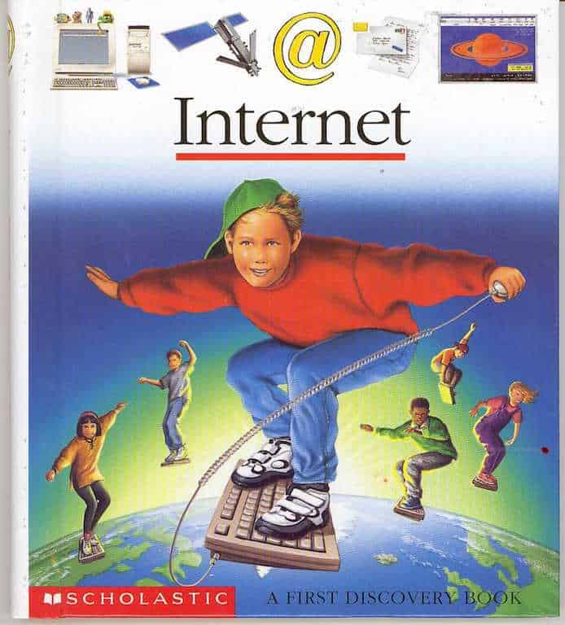
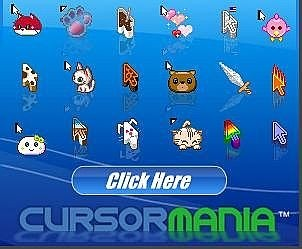
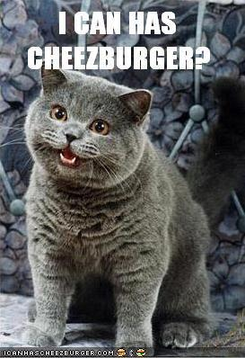

The Life and Death of the Early Internet
The CRT monitor took up half the desk, which itself had multiple compartments for various cumbrous peripherals. Yellowing ivory plastic, a glass screen so thick it bent the room at the edges, and a base so heavy that moving the family PC was a two-person job and a conversation about not wanting a lifetime of lower back pain. The keyboard and mouse had a dedicated drawer, and had the same light grey aesthetic. The Windows 98 mouse had a real, mechanical click; you could feel the switch through the plastic, and the ball was about the size and colour of a hard-boiled egg yolk - and you had to dismantle the mouse occasionally to clean the lint from the ball and rollers. The tower under the desk hummed, ticked, and sounded like a mini jet engine warming up.
I remember the internet being a niche and weird thing, an oddity. I recall my school opened a "computer room" which replaced one of the two music rooms, and therein we would learn how to use Microsoft paint, and I would attempt to steal software from the school computers with a floppy disk, dragging a shortcut from the desktop to the floppy disk.
The internet was not so ubiquitous - it wasn't in our pockets, nor mentioned on TV beyond the occasional news program talking about "surfing the web" in a cringe-inducing way. It wasn't notifications on your wrist, nor something everyone had heard of or knew about. It also clogged up the phone line, and a lot of people considered having your home phone available more important than "dialling in" to the internet, causing you to miss calls. This was before phones were something everyone had, and SMS texting didn't really exist yet - though some people had pagers, so having your phone "off the hook" for an hour or two really made it impossible to contact you.

The early internet itself felt like a new frontier. It was incredibly free and alive in a way the modern internet isn't. It shaped my humour, my taste, my friendships, and a fair chunk of my politics (in more of a "don't be like these people" kind of way). It also, less comfortably, planted the seeds of the surveillance and social media systems that replaced it. The web that made us was the prototype for the machine that now manages us.
I'm going to go down memory lane a little, reminisce about old websites, memes before the word meme was coined, the terrible and amazing freedom of speech, the culture of being on the internet itself, and the social status you were assigned for being nerdy enough to be interested in computers or video games.
Quick jargon guide
- Dial-up: connecting to the internet over a phone line, capped at about 56 kbps. You could not use the phone and the internet at the same time.
- Comet Cursor: a late-90s/early-2000s utility that let you replace your mouse pointer with custom designs. Famously bundled with viruses.
- Kazaa / LimeWire: peer-to-peer file sharing programs used mostly for music, often laced with malware and mislabelled files. Torrenting before torrenting.
- Walled garden: a platform that pulls content inside itself and discourages outbound links, e.g. modern Facebook, Instagram, TikTok.
- Surveillance advertising: tracking users across websites and apps so ads can be targeted and optimized.
The yellowing ivory tower
The first thing to understand about the early internet is that it had a body. The PC was a piece of furniture. The screen was a vacuum tube. Going online had a cost in time, electricity, and household diplomacy: you tied up the phone line, so you had to ask first.
It was slow. A 200KB image could take ten seconds, and you watched it appear in horizontal stripes. Often, websites were designed with this in mind: pages were lighter, writing mattered, and if a site wasted your time, you left. Nobody pushed megabytes of script to display a headline because they could not get away with it.
It was loud. Dial-up had a sound, and that sound meant intent. The handshake scream is the soundtrack of my adolescence. You checked whether anyone needed the house phone, listened to the tones lock into sync, and entered a finite session.
There was one PC per household, if that, and everyone in the house had to negotiate for it. You learned to type fast because someone else was waiting, and you learned to delete search history, empty recycle bins and log out of MSN Messenger lest your parents discover your digital mischief.

{kind=link}
The Comet Cursor incident

My parents one day bought this magical, expensive machine. The family PC was, in real terms, the most valuable thing in the house. My parents treated it accordingly, with instruction manuals as if it was a new microwave.
I was, I want to say, seven. I found a website that promised I could replace the standard arrow cursor with, among other options, a lightning bolt. A lightning bolt, and it was animated! Reader, I smashed that download button and installed that promptly. I clicked install on the bundled toolbar, the bundled “search assistant”, and probably the bundled cryptominer, if it had been invented yet.
Within a week the family PC was a haunted house. Pop-ups opened pop-ups, there were banners, alerts, and unsolicited offers for little blue pills and a woman's voice would play offering to provide our wildest dreams. The browser homepage had been kidnapped, AltaVista was nowhere to be found. My dad sat down one evening and said the words “what have you done.” I, of course, proclaimed my innocence and that I wouldn't even know how to install spyware, or what it was at all.
This meant that the family PC had to be nuked because I wanted my mouse to look cooler. Magical machine, innocent curiosity, immediate self-inflicted catastrophe, slow lesson learned. Well, not really, I think I did it again because I was really into that lightning cursor. I also installed it on my aunty's computer. My dad had a friend he would bring our computer to for resets fairly frequently, and the guy would always rat on me to my dad, saying what I had been up to. Weird to think that trying to outmaneuver Scotty the computer repair guy and tattle-tale was my first step down the path towards my PhD in computer science.

The bundled toolbar and the hijacked homepage weren’t some edge case that was adware, and adware was the first ad-tech business model most of us ever encountered. We just didn’t have a name for it. We called it “getting a virus.”
The identity sandbox: MSN screen names and away messages
The early internet was, more than anything, a sandbox for identity. Before there were 'profiles' in the modern sense, there were screen names, signatures, status messages, and away messages.
MSN Messenger was my centre of gravity. Logging in was theatre, by which I mean you literally considered it your grand entrance. The contact list reordered itself based on who was online, and the moment your screen name lit up, your friends could see it as a massive notification at the bottom right of your screen, so your screen name had to say something since your entire school year, some above and below, and your friends from other schools could see it. It had to project something meaningful, artistic, or say something about your social status. Not the self you actually were at thirteen (in my case a kid who had a center parting and straightened his hair). The self you wanted to be seen as: a badass, misunderstood or popular, cool or mysterious.
I went through phases. I mostly remember having lyrics in my status / screen name. There was the long phase where I tried to convince everyone, including myself, that I was deep. I distinctly remember setting my MSN status to a lyric from Symphony X’s Paradise Lost and feeling like I really showed how deep and cool I was, and how I really hoped that the girl (who, in retrospect, clearly wasn't into me) thought so, too.
Looking down from ethereal skies
Silent crystalline tears I cry
For all must say their last goodbye to paradise
Another was about exile and pride and ruin. I was sixteen. I had been exiled from precisely nothing. But Symphony X said it with such conviction, over such enormous guitars, that it felt like the right thing to broadcast to the few hundred people on my contact list, most of whom I sat next to in school and knew fine well I was as deep as a puddle of my own angsty teenage emo tears.
There was also a major social component in MSN statuses and display names: I remember it being a point of pride to be in someone else's name or status with some super cool custom font.
~~~~~ 𝔎𝔦𝔢𝔯𝔞𝔫 🤞 𝔖𝔱𝔢𝔭𝔥 ❤️ ~~~~~
Bebo and MySpace formalised this later, with profile skins, top-eight friends, and themed pages. But MSN got there first, with nothing but a unicode-decorated screen name and a status message, and it taught a generation how to perform a self in public.
The wild west of acquisition: Kazaa, LimeWire, and the effort economy
CDs were on the way out, mp3s were on the rise. Windows Media Player, WinAmp and similar were the primary tools for managing digital music libraries. I remember the insane skins you could get for these players, amorphous non-rectangular windows that made your parents think you are some kind of hacker.
View this post on Instagram
Kazaa Lite, LimeWire, and the more virtuous-feeling siblings (Soulseek for the snobs, BearShare for the unlucky) were how my generation built music libraries. The process was something like this: 1) You searched for a song. 2) You got back a list of files. 3) You played a guessing game about which files were actually the song, which were viruses, which were screamer pranks, and which were the song but with a twenty-second silent intro because someone had ripped it from the radio. 4) You started the download. 5, 6 and 7) You waited. 8) The download was at 73%. 9) You waited. 10) It was a virus or something way more illegal that a copyrighted song.
The cost of acquisition was substantial, in minutes, in malware risk, and in disk space, which back then was a finite resource you actually noticed. So when you got a song, you kept it. You played it. You filed it under Music\Rock\Symphony X\Paradise Lost\, and the folder felt like a real collection.
Half my files were mislabelled. I spent years thinking certain songs were by the wrong band (I really thought MxPx was Sum 41). I once played a track at a house party that the filename insisted was a famous classic-rock anthem and was, in fact, a children’s choir cover. The library was full of small mysteries and oddities.
I don't like the idea of stealing from artists but also I found way more music that I then went on to purchase (or stream in later life). Same goes for films etc.
Forums and the meritocracy of handles
Forums were a foundation of what the internet has become, social media, Reddit, Discord, etc., all came from IRC and internet forums. You did not have a network of acquaintances measured in thousands. You had a tribe of maybe a few dozen regulars whose handles you recognised on sight, whose arguments you could predict, whose taste you trusted, and whose approval mattered.
That freedom came with a real cost: the old web had fewer guardrails, less moderation, and almost no meaningful accountability. Some of that produced genuine openness and weird creativity; some of it produced outright ugliness: open racism presented as “just jokes,” illegal material being traded in corners of anonymous boards, and harassment campaigns that could ruin someone's life while nobody in charge even pretended to care. If you find yourself disagreeing: do you not remember xbox halo lobbies filled with racism and sexism?
For me, forums really started in the Warcraft 3, Populous: The Beginning, and Age of Empires communities. The strategy guides, the custom-map subforums, the off-topic boards where the same fifteen people reliably ruined each other’s evenings about politics, the long argument threads about whether a particular hero unit was overpowered. It was a meritocracy, brutally so. Nobody cared what school you went to. Nobody cared how old you were or knew what you looked like. They cared whether your post added something. If you were funny, you got quoted. If you were thoughtful, you got cited. If you were a fool, well you'd be the average person online.
RuneScape was wonderful. It was a browser-based MMORPG that managed to build one of the most elaborate social economies in gaming history out of a Java applet and a dial-up connection. The forums around it were enormous. The in-game trading, the clan wars, the elaborate scams (flash1:~~~~~doubling money~~~~~) and the moral outrage about those scams: it was a functioning microcivilisation. Hundreds of thousands of people lived significant chunks of their adolescence inside it. I remember being in the top 20 woodcutters in the world at one point, because I somehow worked up the discipline routine of getting up at 5am before school to get in some woodchopping, go to school, come back and do the same until bedtime. The music still hits me so hard.
The friendships were genuine, and a lot of them have outlasted the forums. I still remember my old buddies from back in the day -- Salty, wherever you are now, I remember playing endless Populous: The Beginning matches with you. Worldwarrior, who I have now met in person and I'm still friends with on Facebook, thank you for joining my awful guild in early World of Warcraft, I'll remember 'The Vengeful' and your smartass comments till the day I die.
Something Awful predates most of this and casts a long shadow over it. Founded in 1999, it was one of the first forums with genuine editorial standards: you paid ten dollars to post, which was enough friction to raise the average quality above the surrounding web. The culture it produced was relentlessly ironic, technically literate, and frequently savage. It spawned lolcats, creepypasta, and a generation of indie game developers: the SA Games forum produced Cave Story, Spelunky, and others. If you want to understand the tone of the early English-language internet, Something Awful is close to the root.

The ambient web
From there, the centre of gravity shifted. Creator-led communities like WCRadio and VTW Productions grew up around personalities, podcasts, and streams. Totalbiscuit, Octale and Hordak, Gnomewise and the Casually Hardcore crew - the audience now had a face and a voice attached. I remember listening in rapture to BrewGuy's submissions to the music competitions. This was a step away from pure forum meritocracy, but it was still a small world. You knew the regulars. You posted in the IRC. You sent in dumb questions and the host might read them out, and that was a thrilling thing because it meant you existed inside the show.
A bit before the WcRadio / VTW era, the ambient web kept the chaos topped up. Newgrounds and Albino Blacksheep were the great Flash animation repositories: the original All Your Base video, “Badger Badger Badger,” and “The End of the World” all lived there before they migrated to email inboxes.
Homestar Runner was the pinnacle of the form; a fully realised surreal comedy universe built entirely in Flash, featuring Strong Bad’s email responses (a weekly event for a certain kind of internet person), Trogdor the Burninator, and a cast of characters with no equivalent in modern web culture. eBaum’s World aggregated everything else and took the credit. Miniclip and PopCap Games filled the gaps with free browser games: legally, without a malware lottery, just Bejeweled and the hover-bike game and pool. Neopets was an entire parallel economy for younger users and, notably, one of the places many people first learned to write HTML, because you could customise your pet’s page. Lemon Demon was (and is) my absolute favorite (I love you Neil Cicierega) - from Ultimate Showdown of Ultimate Destiny to Word Disassociation, to Harry Potter Puppet Pals - one of the grandfathers of modern internet culture and most people wouldn't recognize your name. A true tragedy.
StumbleUpon let you click a button and land on a random site that matched a handful of declared interests. That button was the cleanest expression of what exploring the web used to feel like: you had no idea what was coming next. Songs and Flash cartoons travelled through forum signatures and MSN links, not through algorithms. You discovered things because someone you respected told you to look, or random luck.

The death of anonymity
Then, eventually, internet anonymity started to die. Out came the real names.
Bebo and MySpace asked for something the forums never had. They wanted your real-ish name, a photo, a public top-friends list, a profile theme that broadcast your taste, and a wall where everyone could see what your friends thought of you. The fundamental contract of being online changed.
This was the moment the internet stopped being a secret club and became a public square. Many of the consequences we now argue about, the harassment, the pile-ons, the algorithmic feed, the influencer economy, the political weaponisation, follow from that one shift. Forums had problems too, mind you, forums had trolls and pile-ons and toxic regulars, but were small, slow, and bounded. The public square was none of those things, and we walked into it cheerfully.
At some point the internet stopped being niche
I remember watching a film with my parents and someone said “YouTube” on the film and I lost it. I couldn't believe it. YouTube, that niche little corner of the internet I knew of, that I told friends and family about, and forced them to watch things on, was being mentioned on TV. It was FAMOUS. I couldn't believe it. My parents thought it was just some weird nerdy reference and didn't think it would ever be a thing. Funny looking back now, with YouTube then being purchased by Google which became, well, you know what Google is.
In the late 90s and early 00s, being into games and the internet was socially embarrassing. You were the nerd, the basement kid, the one who knew too much about wizards and dungeons or whatever and not enough about whatever was cool in the school yard that week. Playing games online and living on forums only lowered your social standing. That reversal is one of the biggest cultural flips of my lifetime. Now the same behaviours are mainstream: everyone games, everyone is online, and kids who once would have hidden that they played now compare Fortnite skins in class like we used to compare football strips.

Newgrounds, eBaum’s World, Lemon Demon songs passed around in terrible quality, the in-jokes from the Warcraft 3 forums, the Symphony X lyric, the Comet Cursor fiasco: those all belonged to the nerds. Once the non-nerds started paying attention and decided it was cool to be on MySpace, Bebo etc., the nerds' domain was no longer exclusive.

The seeds of everything that came next
The early internet didn’t fail and it wasn’t killed. It was the first iteration. Almost every behaviour, format, and genre that defines the modern web was already there in primitive form, and the platforms that came later were, in a very real sense, just better-funded reruns of things a few thousand nerds had already invented for fun.
The MSN screen name became the profile bio. Performing a curated self in a tiny text field, in front of an audience of people who knew you, is not a TikTok invention. We were doing it in 2003 with a Symphony X lyric and three Wingdings.
The away message became the status update. “brb dinner” is the direct ancestor of every tweet, every Facebook status, every “just thinking out loud” LinkedIn post.
The forum signature became the meme. A small, shareable, in-joke-laden image with a punchline, designed to travel: that’s a forum sig.
Newgrounds became YouTube. A platform where anyone could upload a thing they made, get rated by strangers, build an audience, and occasionally produce a generational classic. Salad Fingers and Charlie the Unicorn walked so MrBeast could run.
StumbleUpon became the For You page. A button that gave you something you didn’t ask for, calibrated to your declared interests, designed to keep you clicking.
Kazaa and LimeWire became Spotify and Netflix. We used to download our media now we stream it.
The Warcraft 3 forum became Discord. A small group of people who care intensely about a niche thing, talking to each other in real time, with regulars and newcomers and in-jokes and the occasional flame war.
The Bebo top-eight became the Close Friends list and Snapchat score. Public ranking of intimacy, performed for an audience, recalibrated weekly.
Something Awful became 4chan became Reddit became the entire tone of the English-language internet. Irony as a default register, technical literacy as a status marker, and a shared sense of being slightly outside the mainstream: that’s a culture that started in a paid-posting forum in 1999 and now runs the comment section of every news site on earth.
Perfect Kirby and Homestar Runner became prestige animation. A small team, a consistent universe, a release cadence, a devoted audience: that’s a Netflix show now. The Brothers Chaps were doing it for free on a Flash site.
The RuneScape clan became the guild became the raid became the persistent online community. The shape of how strangers organise around a shared activity online was settled before most current platforms existed.
Every time you scroll a feed, post a status, send a meme, join a Discord, queue for a raid, or watch a creator you follow, it all came from those early experiments. Flash is gone (don't cry, don't cry) but YouTube remains.
And to be fair -- the platforms did solve some things the early internet was genuinely awful at. Moderation at scale was a real problem, and forums were worse at it than anyone likes to admit. Mobile brought the web to billions of people who would never have sat down at a family PC and negotiated for their turn on it. Translation, accessibility, global reach: the early web was overwhelmingly English-speaking, Western, and didn’t much notice. The platforms got a lot of things badly wrong but they also solved real things. The pity is that the good decisions and the bad ones came bundled, like a toolbar you didn’t ask for or a virus alongside a lightning bolt cursor.
The surveillance didn’t start with the platforms either. Hit counters, click metrics, cookies, ad targeting, and adware bundles like the one Comet Cursor shipped with were all there in the early 2000s. The platform era didn’t invent those ideas -- it built a better business model around them and made them invisible.
The internet of the late 90s and early 2000s was a generation of curious people, mostly without a profit motive, inventing the entire grammar of online life out of HTML, BBCode, and a shared passion for nerdy things. They got it remarkably right. Almost everything that works about the modern web is something they prototyped first, and almost everything that doesn’t work is something the platforms added on top.
Common questions
Was the early internet really better, or are you just nostalgic?
Both. It was worse on safety, accessibility, and basic quality control. It was better on agency and participation. The honest version: keep the contracts (small communities, generous linking, ownership of your own page) and not the bugs (malware, harassment, exclusionary culture). Nostalgia is a starting point, not a plan.
Where do games fit into this story?
For a lot of us they were the entry point. Warcraft 3, Populous, Runescape, and the forums and clans around them were where we first found a tribe of strangers based on shared passion rather than geography. The game was the excuse. The community was the point.
Why focus so much on forums?
Because forums were where identity and culture compounded. Posts stayed visible, arguments had memory, in-jokes accumulated, and social trust formed over long timelines. Feeds optimise recency; forums optimised continuity.
Did the early internet already contain surveillance logic?
Yes, just more visibly. A hit counter bragged about itself at the bottom of the page, and the adware announced itself with pop-ups. The platforms took the same logic, scaled it up, and buried it where you could no longer see it working.
What is the cleanest summary of the transition?
We moved from websites you visited to feeds that captured you, and from screen names you invented to profiles you had to maintain. The first model rewarded curiosity and craft. The second rewards retention and self-promotion.
Was the brooding-lyric MSN status really that important?
It was the rehearsal for everything that came after. A teenage boy quoting Symphony X at midnight is a small, harmless thing. But the underlying skill, performing a self in public for an audience whose reaction you can see in real time, is the same skill the platforms now extract at scale. We learned the moves on MSN. The platforms just built bigger stages.
What can one person do to recover the good parts?
Publish on a site you control, link generously, use RSS, join a small forum or Discord and actually post in it, and spend less time in algorithmic feeds. Those are small acts, but they rebuild the social texture that made the early web feel alive.